4.5 The Birthrates Example in R
The python version of the example below was written by our TA Georgios Avdis and can be found here: Python Version of Regression Splines and
Python Version of Smoothing Splines .
The Birthrate data set contains U.S. birth rate data from 1917 to 2003.
## Year Birthrate
## 1 1917 183.1
## 2 1918 183.9
## 3 1919 163.1
## 4 1920 179.5
## 5 1921 181.4
## 6 1922 173.4Plotting the data we have
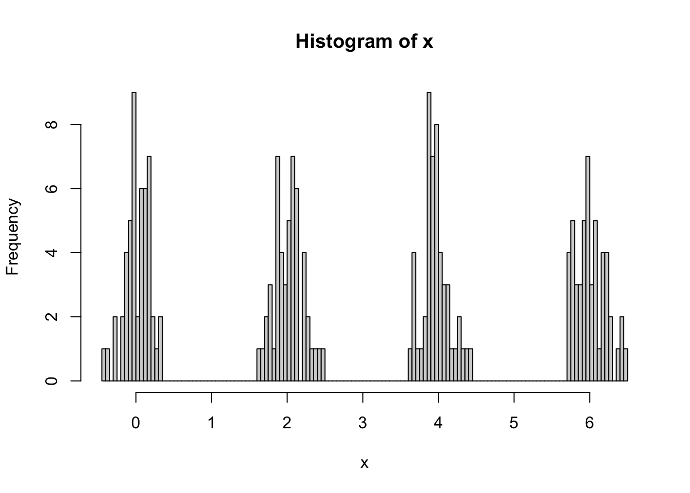
which is an highly nonlinear trend.
We first try to fit a polynomial regression with orthogonal polynomials for polynomials with degrees 3, and 6. The fitted lines can be shown below:
par(mfrow=c(1,2))
poly3.fit <- lm(Birthrate ~ poly(Year, 3), data = birthrates)
plot(birthrates, pch = 19, col = "blue")
lines(birthrates$Year, poly3.fit$fitted.values, lty = 1, col = "magenta", lwd = 2)
title("degree = 3")
par(mar = c(2,3,2,0))
poly6.fit <- lm(Birthrate ~ poly(Year, 6), data = birthrates)
plot(birthrates, pch = 19, col = "blue")
lines(birthrates$Year, poly6.fit$fitted.values, lty = 1, col = "magenta", lwd = 2)
title("degree = 6")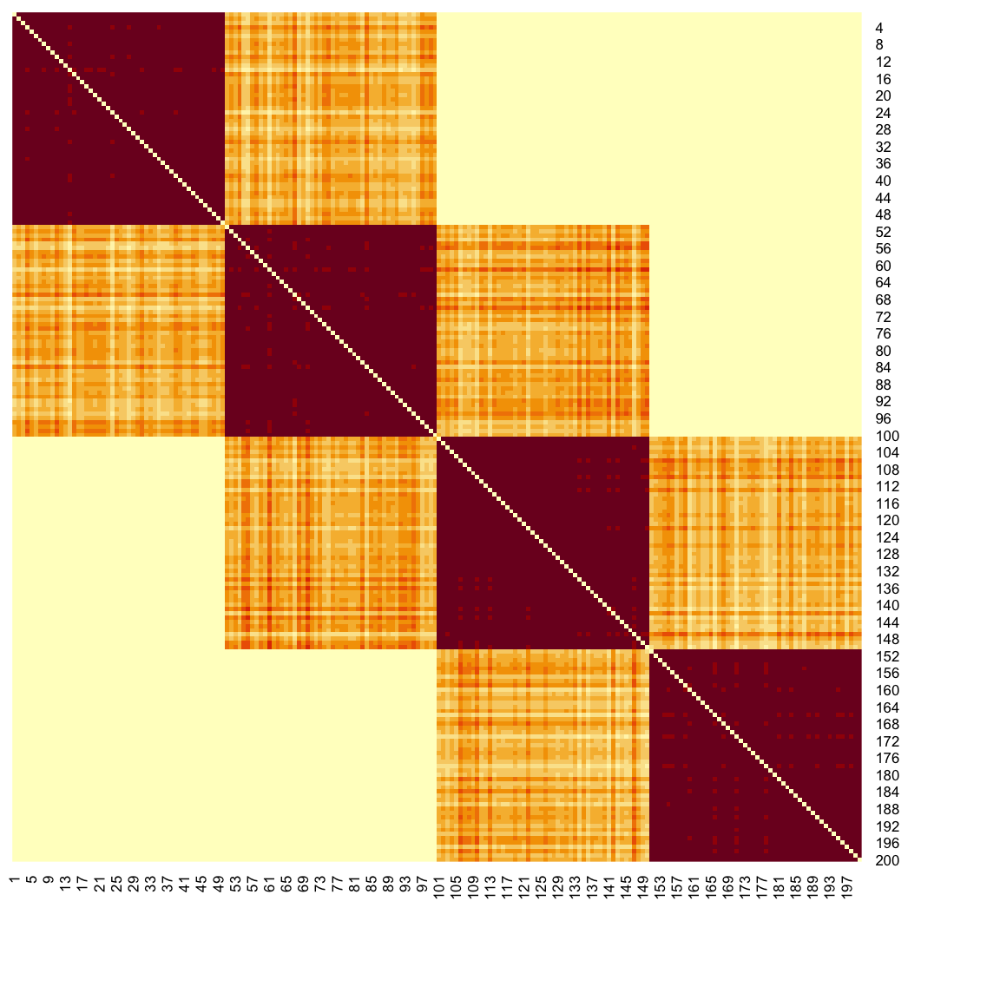
We can see that the 6th order polynomial is better, but it is not very good. We can try fitting local polynomials - piecewise polynomials of lower order (we try constant functions and linear function in the example below:
myknots = c(1936, 1960, 1978)
bounds = c(1917, myknots, 2003)
# Piecewise Constant Polynomials
mybasis = cbind("x_1" = (birthrates$Year < myknots[1]),
"x_2" = (birthrates$Year >= myknots[1])*(birthrates$Year < myknots[2]),
"x_3" = (birthrates$Year >= myknots[2])*(birthrates$Year < myknots[3]),
"x_4" = (birthrates$Year >= myknots[3]))
const.fit <- lm(birthrates$Birthrate ~ . -1, data = data.frame(mybasis))
par(mar = c(2,3,2,0))
plot(birthrates, pch = 19, col = "blue")
abline(v = myknots, lty = 2)
title("Piecewise constant")
for (k in 1:4)
points(c(bounds[k], bounds[k+1]), rep(const.fit$coefficients[k], 2), type = "l", lty = 1, col = "magenta", lwd = 4)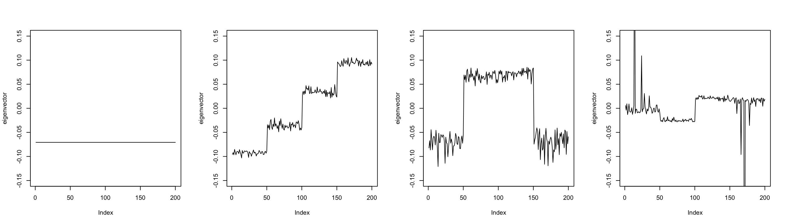
# Piecewise Linear Polynomials
mybasis = cbind("x_1" = (birthrates$Year < myknots[1]),
"x_2" = (birthrates$Year >= myknots[1])*(birthrates$Year < myknots[2]),
"x_3" = (birthrates$Year >= myknots[2])*(birthrates$Year < myknots[3]),
"x_4" = (birthrates$Year >= myknots[3]),
"x_11" = birthrates$Year*(birthrates$Year < myknots[1]),
"x_21" = birthrates$Year*(birthrates$Year >= myknots[1])*(birthrates$Year < myknots[2]),
"x_31" = birthrates$Year*(birthrates$Year >= myknots[2])*(birthrates$Year < myknots[3]),
"x_41" = birthrates$Year*(birthrates$Year >= myknots[3]))
line.fit <- lm(birthrates$Birthrate ~ .-1, data = data.frame(mybasis))
par(mar = c(2,3,2,0))
plot(birthrates, pch = 19, col = "blue")
abline(v = myknots, lty = 2)
title("Piecewise linear")
for (k in 1:4)
points(c(bounds[k], bounds[k+1]), line.fit$coefficients[k] + c(bounds[k], bounds[k+1])*line.fit$coefficients[k+4],
type = "l", lty = 1, col = "magenta", lwd = 4)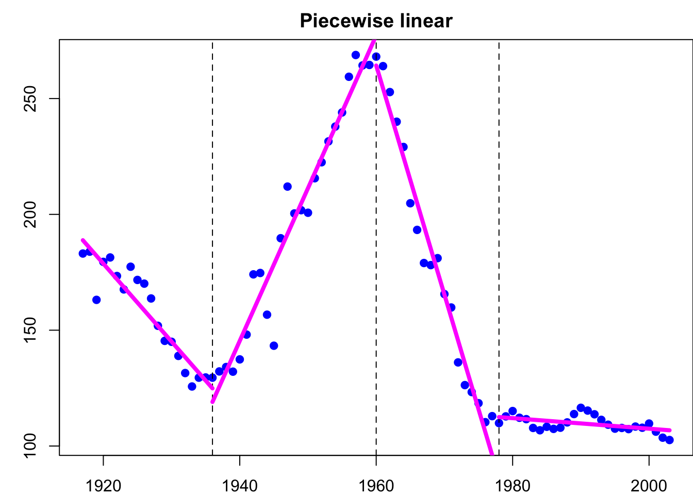
As we discussed in the lecture, it is a localized fit, but there are discontinuities and the overall fit is not good.
4.5.0.1 Splines Regression
Instead, we can use splines to fit the data. Let us first try to use the B-Splines. We will first try a linear spline
bsplines.lin.fit <- lm(Birthrate ~ splines::bs(Year, degree = 1, knots = myknots), data = birthrates)
plot(birthrates, pch = 19, col = "blue")
lines(birthrates$Year, bsplines.lin.fit$fitted.values, lty = 1, col = "magenta", lwd = 4)
title("Linear pline with the bs() function")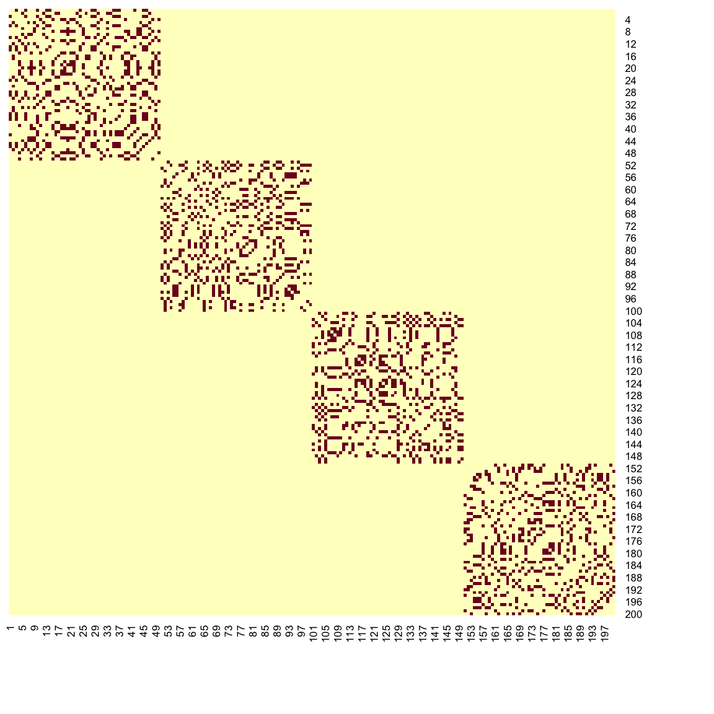
and then a cubic spline (as the ones discussed in class)
bsplines.3.fit <- lm(Birthrate ~ splines::bs(Year, degree = 3, knots = myknots), data = birthrates)
plot(birthrates, pch = 19, col = "blue")
lines(birthrates$Year, bsplines.3.fit$fitted.values, lty = 1, col = "magenta", lwd = 4)
title("Cubic spline with 3 knots")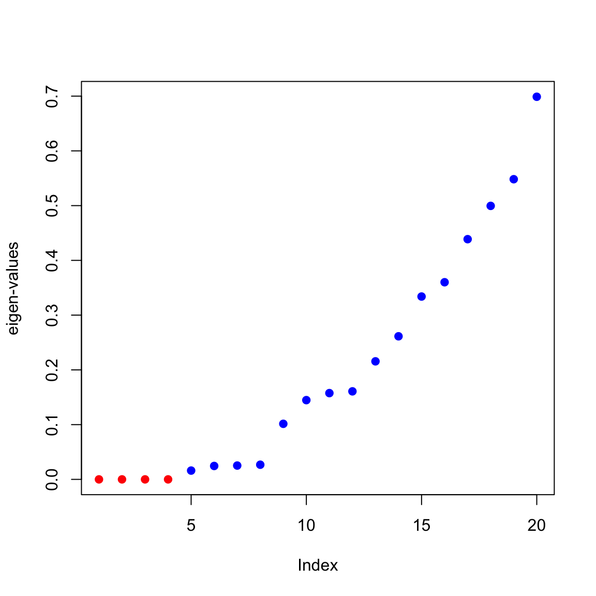
In the plot below, we used our pre-defined knots. We can alternatively determine the degrees of freedom in the function bs:
bsplines.3.fit.new <- lm(Birthrate ~ splines::bs(Year, df = 5), data = birthrates)
plot(birthrates, pch = 19, col = "blue")
lines(birthrates$Year, bsplines.3.fit.new$fitted.values, lty = 1, col = "magenta", lwd = 4)
title("Cubic spline with 6 degrees of parameters")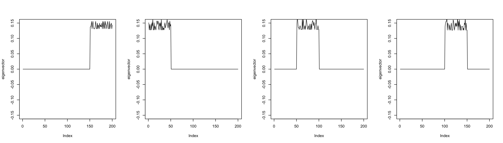
Let us now try the Natural Cubic Splines
library(splines)
ns.splines.fit = lm(Birthrate ~ ns(Year, df=6), data=birthrates)
plot(birthrates, pch = 19, col = "blue")
lines(birthrates$Year, ns.splines.fit$fitted.values, lty = 1, col = "magenta", lwd = 4)
title("Natural Cubic Splines with df=6")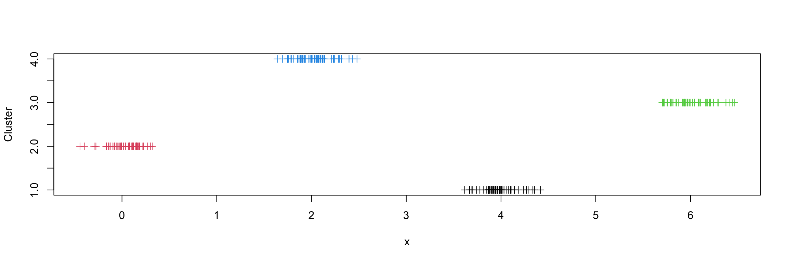
4.5.0.2 A Simulated Example of Smoothing Splines
In this example, we are going to reproduce the example from the ESL book in section 5.5.2 in which we the true function of the data is given by \[f(x) = \frac{sin(12 (x+0.2))}{x+0.2}, \, x\in[0,1]\]
So, we are first going to simulate data from this curve:
set.seed(598)
n=100
x = sort(runif(n))
y = sin(12*(x+0.2))/(x+0.2) + rnorm(n, 0, 1)
plot(x, y, col="blue", pch=16 )
funf_x = 1:50/50
funf_y = sin(12*(funf_x+0.2))/(funf_x+0.2)
lines(funf_x, funf_y, col=8, lwd=2)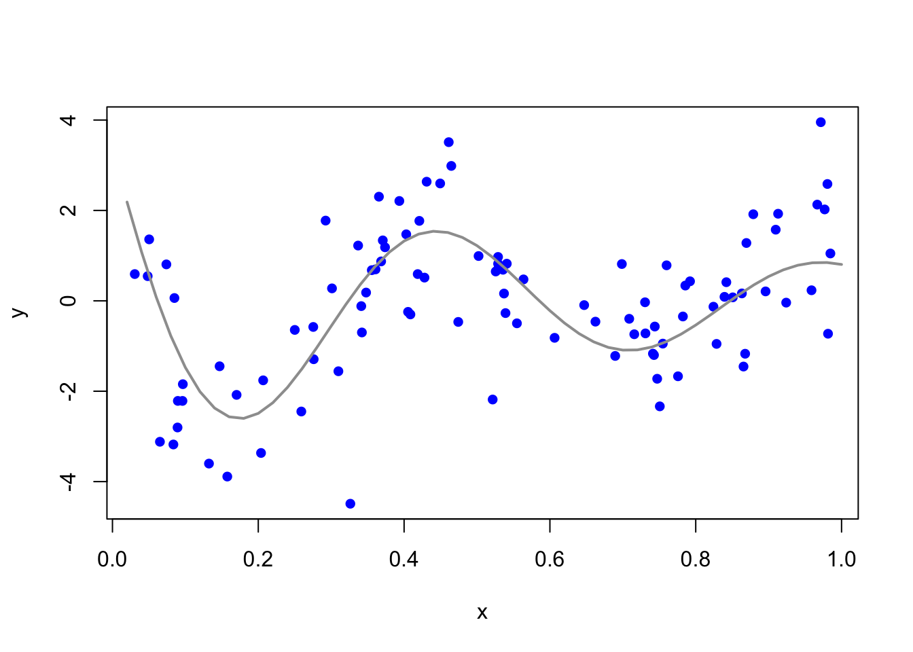
4.5.0.3 Fitting a Smoothing Spline model to the simulated data above
The function to use is smooth.spline and is part of the splines library in R.
The model is fitted as follows:
## Call:
## smooth.spline(x = x, y = y, df = 5)
##
## Smoothing Parameter spar= 0.9616029 lambda= 0.006048723 (12 iterations)
## Equivalent Degrees of Freedom (Df): 5.000634
## Penalized Criterion (RSS): 162.0406
## GCV: 1.795488We can compute the fitted values as follows:
To illustrate the fit of the model, we can plot the fitted line on top of the data:
plot(x,y, xlab='x', ylab='y');
lines(funf_x, funf_y, col=8, lwd=1.5);
lines(fitted.y, lty=2, col='blue', lwd=1.5);
title('df=8');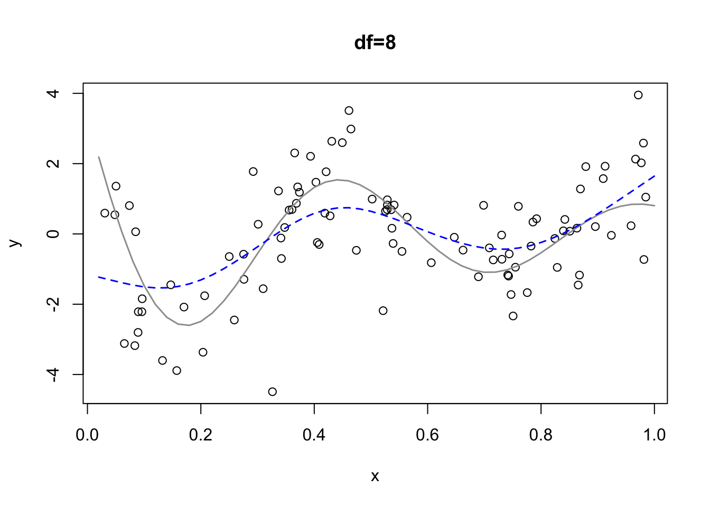
The blue line is the true model, while the gray line is the fitted model with 5 degrees of freedom. As we discussed, if we change the degrees of freedom, e.g. df=8, then the line will be more/less sensitive to the data. For example for df=8 we have
plot(x,y, xlab='x', ylab='y');
lines(funf_x, funf_y, col=8, lwd=1.5);
lines(predict(smooth.spline(x, y, df=8), funf_x), lty=2, col='blue', lwd=1.5);
title('df=8');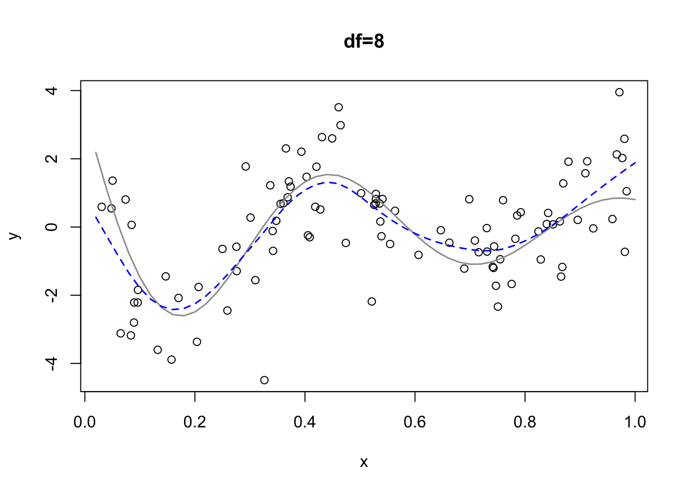
4.5.0.4 Choice of Lambda
Many R packages come with an inbuilt option for determining lambda, primarily based on leave-one-out cross-validation (LOOCV) and generalized cross-validation (GCV).
There’s no need to specify lambda directly. Instead, we indicate the desired degrees of freedom (df), ranging from 0 to n. R then determines the appropriate lambda. We can then consult both CV and GCV curves to decide the best lambda or df.
When using the smooth.spline function with a degree of freedom set at 9, the returned value model.fit$df may have a slight deviation due to rounding errors.
The leverage output is equivalent to the diagonal entries of the smoothing matrix.
## [1] 9.001417## [1] 0.30893986 0.16530188 0.15452511 0.10279673 0.08811473 0.08173143 0.08148178 0.08160942 0.08169108 0.08413540 0.08441745
## [12] 0.11256266 0.12120898 0.12602066 0.13175493 0.13750648 0.13745737 0.11875674 0.11154402 0.10015615 0.09976906 0.08986948
## [23] 0.08508903 0.08020005 0.07203883 0.06701137 0.06528799 0.06497591 0.06309976 0.06147779 0.06087571 0.06065672 0.06070371
## [34] 0.06080451 0.06105153 0.06369195 0.06523756 0.06573835 0.06643670 0.06911934 0.06984682 0.07231683 0.07347632 0.08032413
## [45] 0.08330237 0.08402559 0.08427316 0.07806223 0.07013561 0.06947727 0.06946921 0.06948635 0.06949033 0.07114094 0.07177155
## [56] 0.07287487 0.07400078 0.08729462 0.09996053 0.14342850 0.14982974 0.13605679 0.10479241 0.09474069 0.08413352 0.07762692
## [67] 0.06748810 0.06720784 0.06346315 0.06318782 0.06301969 0.06275533 0.06281727 0.06333844 0.06451613 0.06999234 0.07288373
## [78] 0.07423106 0.07646914 0.07952440 0.07869513 0.07674170 0.07634088 0.07528017 0.07601450 0.07640336 0.07689899 0.07734393
## [89] 0.08037947 0.08796840 0.09303429 0.09391332 0.09611884 0.10022513 0.10988799 0.12007621 0.13650369 0.15233032 0.15631587
## [100] 0.17386379## [1] 9.001417By default, the function offers a GCV score, but you can alter it to LOOCV for comparison.
## [1] FALSE## [1] 1.577447## [1] TRUE## [1] 1.58123